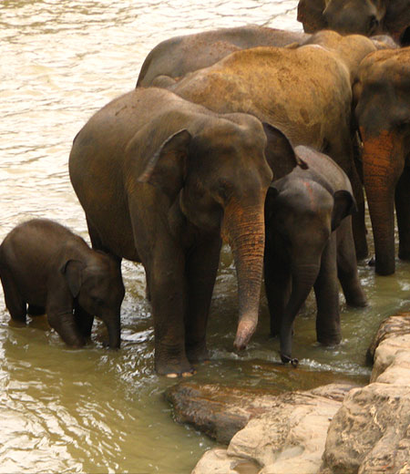

SIGNATURE TOUR TF-9

Duration: 10 D / 09 N
Destinations: Colombo - Kandy - Nuwara Eliya - Galle - Colombo
Journey Overview and Itinerary Highlights:
Day 1: Arrive in Colombo, the Capital city of Sri Lanka, and check in to your preferred hotel.
Day 2: Private Sightseeing of Colombo. The entry and exit point for all visitors to Sri Lanka, Colombo is a small capital, divided by parks and wide streets with parliament and other government offices still housed in grand colonial buildings.Downtown Colombo abounds with shops selling crafts, textiles and jewels with plenty of good restaurants available serving an array of Sri Lankan and international cuisines.
Day 3 : Drive to Kandy : Visit the Pinnewala Elephant Orphanage and Millennium Elephant Foundation and get up close and personal with this mighty, yet gentle mammal. Later that afternoon you visit the Temple of the Tooth, one of the most famous Buddhist sites, not just in Sri Lanka but in the religion worldwide followed by a visit to an early evening performance of traditional Kandyan Dance. Overnight in Kandy.
Day 4 : This morning you take a delightful train journey south to the tea country, where from the observation carriage you have fantastic views of the tea plantations and pickers working the harvest. In the afternoon you visit one of the wonderful tea estates with your guide, on an educational tea picking and tasting experience. Over night at tea estate or Nuwara Eliya
Day 5 : Nuwara Eliya: An early start to the day as you drive to a tour of the Yala national park Yala National Park covers an area of around 129,700 hectares, with 14,000 hectares open to visitors. The park's two main sections are Yala West (also called Ruhuna) and Yala East. Yala West, or Ruhuna National Park, is considered to have the world's highest density of leopards, with approximately 35 leopards believed to reside within the park's boundaries. Other animals that can be seen in the park are elephants, sloth bear, spotted deer, barking deer, mouse deer, toque monkey, mongoose and crocodiles. Bird lovers will favour Yala East, with its huge array of bird life - over 130 recorded avian species, including the Crested Serpent Eagle and White Bellied Sea Eagle. There are significant numbers of water birds, too, like the Lesser Flamingo and rare Black Necked Stork. During the north-east monsoon, the park's lagoons are visited by vast numbers of migrating waterfowl. Over night at Nuwara Eliya or tea estate
Day 6 : Head along the coastline to Galle, a Unesco Heritage Site where small back streets in the Dutch Fort provide a very charming experience. Evening at your own leisure. Overnight at Galle
Day 7: Day at your own leisure to explore Galle. Overnight at Galle
Day 8 : Day at leisure - but when the weather is good it's worthwhile to take a boat trip along the coast. Overnight at Galle Day
9: Drive back to Colombo along the coastline to your accommodation in Colombo. Rest of the day at your own leisure.
Day 10: Private transfer to airport for flight back home
Where to Stay:
Cinnamon Hotels & Resorts / Aman / Ceylon Tea Trails / Anilana
Inclusions
- Hotel / Rooms Category as per specified or similar. The hotel accommodation is based on two persons sharing one double room with private facilities and daily American buffet breakfast (Some may include further meals)
- Tea Country train ride
- Private touring with your own personal guides, air conditioned vehicle (sedan, SUV or Tempo) with Chauffeur.
- Entrance fees at all monuments and museums mentioned in the itinerary
- Child above 2 years and below 11 years without extra bed, breakfast cost to be settled directly by the guest
- Private safari in Yala National Park
- Bottled water throughout the tour. - Around-the-clock support in each destination during your trip
- Internal flights if any.
Exclusions
- Anything not mentioned under 'Package Inclusions'
- All personal expenses, portages, optional tours and extra meals / snacks
- Camera fees, alcoholic/non-alcoholic beverages
- Tips, laundry and phone calls
- Medical and travel insurance
- Any increase of Govt. taxes at time of operating the tour
- Any expense incurred or loss caused by reasons beyond our control such as bad weather, natural calamities, landslides, floods, flight delays, rescheduling, cancellations, any accidents, medical evacuations, riots/strikes/war, & etc.